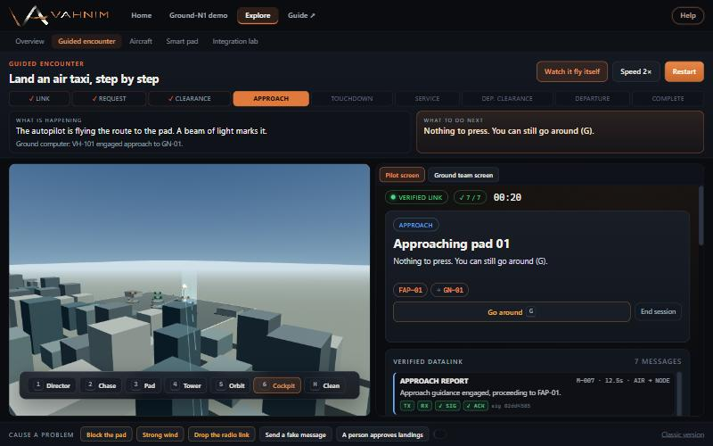

Ground-N1 and GroundNode
Simulation
User Manual
How to run, explore and present the city simulation and the Ground-N1 demo: an air taxi and the ground talking to each other, with five landing pads.
City simulation · Ground-N1 launcher, pilot, ground control, live view · Guided encounter · Aircraft · Smart pad · Integration lab
1. What this is
The project simulates an urban air mobility terminal with five landing pads (GN-01 to GN-05). It has two parts you can use on their own or together:
- City simulation (the home page). Air taxis (UAMs) and small drones (UAVs) fly out from the pads, hover still over a city site, return, land and charge. Use it to show the whole fleet at work.
- Ground-N1 demo. One air taxi and the ground node talk to each other. A pilot uses a cockpit screen, the ground team uses an operations screen, and a live 3D view shows the pads. Every instruction is signed and checked, and the ground computer explains each decision.
Contents
- What this is
- Getting started
- Finding your way around
- City simulation
- Ground-N1 demo
- Walkthrough: one landing, step by step
- Stories, approvals and safety tests
- Explore
- Troubleshooting and limits
2. Getting started
- Install Node.js (any recent version) and open a terminal in the project folder.
- Run
npm install once. This downloads the pinned 3D library.
- Run
npm start. It serves the project at http://localhost:8123.
- Open
http://localhost:8123 in Chrome or Edge. The home page is the city simulation.
Check it works: run npm test. Every suite should print a PASS line (city fleet, protocol, coordination, encounter, Ground-N1 and the site checks).
Requirements
- A desktop browser with WebGL (Chrome, Edge or Firefox). The three Ground-N1 windows must be in the same browser so they can share one simulation.
- For the two-screen demo, at least 1280 × 720 per window. A second monitor is ideal for the live view.
- By default the server is reachable only from this computer. To show it on your network run
HOST=0.0.0.0 npm start.
3. Finding your way around
Every page has the same header. Click the Vahnim logo or Home to return to the city simulation from anywhere.
| Header item | What is inside |
|---|
| Home | The city simulation. |
| Ground-N1 demo | Sub-menu: Launcher, Pilot, Ground control, Live view, Demo wall. |
| Explore | Sub-menu: Overview, Guided encounter, Aircraft, Smart pad, Integration lab. |
| Guide ↗ | Opens this manual (PDF). |
| Help | A short plain-language explanation of the page you are on. The button pulses until you have read it once. Press Esc to close it. |
Clicking a header item replaces the current window. During a Ground-N1 demo keep the Pilot, Ground and Live windows open; the shared simulation keeps running while at least one is open and restarts if you close them all.
4. City simulation

Figure 1. The five pads with their parked aircraft; controls above, flight board on the right.
Aircraft depart a pad vertically, climb, fly to a city site, hover still for the mission, then return, wait for a free bay, land, charge (or swap the battery) and redeploy. Each UAM takes a whole pad. Each pad holds up to three UAVs, never mixed with a UAM.
| Control | What it does |
|---|
| UAMs (0 to 12) and UAVs (0 to 20) | How many air taxis and drones are in the home fleet. Added aircraft arrive from outside the city; removed ones retire after landing. |
| Mission demand | How often idle aircraft are sent out. Higher demand means busier pads and queues. |
| Turnaround mode | Charge in place (longer stop) or Battery swap (short stop). |
| Pause, Reset, Scene focus | Freeze the simulation (the camera still works), restart it, or hide the panels for a clean picture. |
| Camera menu | Orbit, City overview, Follow aircraft, Pad approach. Drag to orbit and scroll to zoom; Reset camera returns to the start view. |
| Flight board | Click an aircraft to select it and see its mission, battery, altitude and traffic status. |
| Communications filter | Show all channels, or only missions, safety, arrivals, departures, service, or the selected aircraft or pad. |
Watch "Aircraft awaiting a bay" rise when you raise demand while few pads are free.
5. Ground-N1 demo

Figure 2. The launcher: choose a story, then start.
Starting
- Open Ground-N1 demo › Launcher.
- Pick a Story (see section 7). More options lets you choose who approves landings, the speed (½× to 4×) and autoplay.
- Choose how to view it:
- Start the demo opens three windows: live view, pilot and ground control (allow pop-ups).
- All on one screen tiles the three screens on one display (the demo wall).
- Play the film runs a complete landing and take-off by itself with no menus, ideal for screen recording. Press Esc to leave.
The control panel shows the aircraft's phase, the simulated time, how many messages were verified and how many windows are connected. Restart resets the story; Pause freezes flight and timers.
The three screens
| Screen | Who | What it shows |
|---|
| Pilot | The air taxi pilot | Flight display, terminal map, one guidance card with a single main button, and the verified message log. |
| Ground control | The ground team | Radar, aircraft strip, five pad controls, weather, a decision card when a person must approve, and two logs. |
| Live view | Everyone | A 3D camera over the terminal with captions for key events. |
Pilot screen

Figure 3. Pilot screen after the ground confirmed the read-back. The orange button is the next step.
- Guidance card (right): says what is happening and what to do next. The large button is the only thing you usually need. Enter presses it.
- Decline appears when an offer can be declined; Go around (G) while approaching; End session closes the link.
- Flight display (left): attitude, speed, altitude, vertical speed and heading, with battery, power, thrust and wind below.
- Terminal map (centre): the five pads, the route and the aircraft. Zoom with Auto, Close or Wide.
- Verified messages: each shows TX (sent), RX (received), SIG (signature checked) and ACK (acknowledged). A rejected message is red with the reason.
Ground control screen

Figure 4. Ground control with the aircraft on approach to GN-01.
| Element | Use |
|---|
| Approvals (top) | Automatic: the computer offers clearances by itself. Person approves: each offer waits for you. |
| Your decision card | Appears when approval is needed. Approve the recommended pad, choose another free pad, or hold. |
| Step in | Hold, Go around or Cancel clearance. These override the computer and are logged. |
| Pads | Each pad row has Block (debris) and Close (maintenance). A blocked or closed pad cancels an approach to it and the aircraft is sent to another pad. |
| Weather | Wind, gusts and direction. Above 14 m/s gusts, new requests are held. |
| Why the computer did it | Plain reasons for every choice: why pads were rejected, why one was picked, holds and diverts. The other tab lists the verified messages. |
| Test the safety checks | Send a fake message, replay a message, or drop the radio link for 10 s. Fake and replayed messages must be rejected without changing anything. |
Live view

Figure 5. Live view on short final: the beam marks the assigned pad and a caption announces the clearance.
Pad colours: green free, blue reserved, amber occupied, red blocked, grey closed. Cameras: 1 Director (automatic shots), 2 Chase, 3 Pad, 4 Tower, 5 Orbit (drag and scroll), 6 Cockpit (first person). H hides the panels and header for a clean feed; F toggles fullscreen.
6. Walkthrough: one landing, step by step
Use the Normal landing story at 1×. A full run takes about two and a half minutes. Progress shows under the pilot's title.
| # | Who | Action | What happens |
|---|
| 1 | Pilot | Connect to ground | A signed hello is sent; the node checks the aircraft against its registry and opens a session. |
| 2 | Pilot | Request landing | The computer checks all five pads, the wind and the battery. Occupied pads are rejected with the reason; it picks the nearest free pad. |
| 3 | Pilot | Accept and read back | The read-back code is verified; the pad is locked and shows as reserved. |
| 4 | Pilot | Start approach | The aircraft flies the route, lines up over the pad and descends. Watch the live view. |
| 5 | Automatic | Touchdown | The touchdown report and sink rate are verified. Rotors slow down. |
| 6 | Pilot | Confirm rotors stopped | Charging starts (sped up for the demo). |
| 7 | Pilot | Request departure, accept, start departure | Offered once battery and weather allow. |
| 8 | Automatic | Climb-out | The pad is released when the aircraft is clear; the session closes. |
Message signing in the demo is a keyed check to show verification. It is not real cryptography.
7. Stories, approvals and safety tests
| Story | What to show |
|---|
| Normal landing | The full happy path. |
| Strong wind | The request is held. On the ground screen lower the wind slider; the computer decides again and offers a clearance by itself. |
| Something on the pad | Debris appears on the assigned pad just before landing: the clearance is cancelled, the aircraft goes around and is offered another pad. |
| Low battery | The request is marked urgent and skips approval. |
| Radio link drops | The link drops on approach: the aircraft goes around and holds. When the link returns, connect again and re-request. |
Things to try during any run
- Set approvals to Person approves and pick a different pad than the one recommended.
- On the ground screen, Block the assigned pad mid-approach.
- Open Test the safety checks and send a fake message: it is rejected and nothing changes.
- Set the wind above the limit on final: the computer orders a go-around.
Presenting
- For a hands-free loop use Play the film, or All on one screen with Autoplay; use 2× or 4× to shorten waits.
- Put the live view on the big screen and press H for a clean picture.
8. Explore
Overview
A plain-language menu of the pages below, each with what it is, what to try and who it is for, plus a short glossary (UAM, clearance, read-back, go-around and more).
Guided encounter

Figure 6. The guided encounter: coach on top, cockpit view and pilot screen below.
The easiest way to understand the whole system. It runs its own private simulation, so it never disturbs a demo running in other windows.
- Coach (top): progress steps, What is happening in simple words, What to do next, and the last decision the ground computer made.
- Left: a first-person view from the cockpit seat. Use the camera buttons (or keys 1 to 6) for other views.
- Right: the Pilot screen or, using the tabs, the Ground team screen: the same software as the demo.
- Cause a problem (bottom): block the pad, strong wind, drop the radio link, send a fake message, or make a person approve landings. Press again to undo.
- Top right: Watch it fly itself, Speed and Restart. The earlier version is kept under Classic version.
Aircraft
Turntable view of the V6 air taxi and S4 drone with plain-language key facts. Choose Hover, Cruise (the air taxi's wing carries it and the lift rotors stop; the drone tilts forward) or Parked.
Smart pad
Interactive 3D pad concept. Click a part or the list to highlight it; use Top view, Reset, auto-rotate and the exploded view.
Integration lab
A workshop for harder cases between aircraft and ground: visitor and unknown aircraft, expired offers and lost links. It can also mirror city telemetry from another tab.
9. Troubleshooting and limits
| Problem | Fix |
|---|
| Page will not load | Check npm start is running and use http://localhost:8123. |
| Windows do not open | Allow pop-ups for the site, open the screens from the Ground-N1 menu, or use All on one screen. |
| A banner says "Connecting" or "Connection lost" | The screen lost the shared simulation. It reconnects by itself; if not, reload the page. If all Ground-N1 windows were closed the simulation restarts. |
| Screens show different states | Windows must be in the same browser profile. Adding ?local=1 to a page gives it a private copy. |
| 3D view is blank | The browser needs WebGL. Use Chrome or Edge with hardware acceleration on. |
| The main button is missing | Some moments need no action; the card says "Nothing to press". |
Limits. This is a simulation for demonstration. Flight dynamics are illustrative, not validated aerodynamics. Only one aircraft is simulated in Ground-N1; other pads show parked aircraft. Charging is sped up. The pilot screen is a software concept, not a certified flight instrument. Registry, read-back and message signing are demonstrations. No aviation regulatory compliance is claimed.